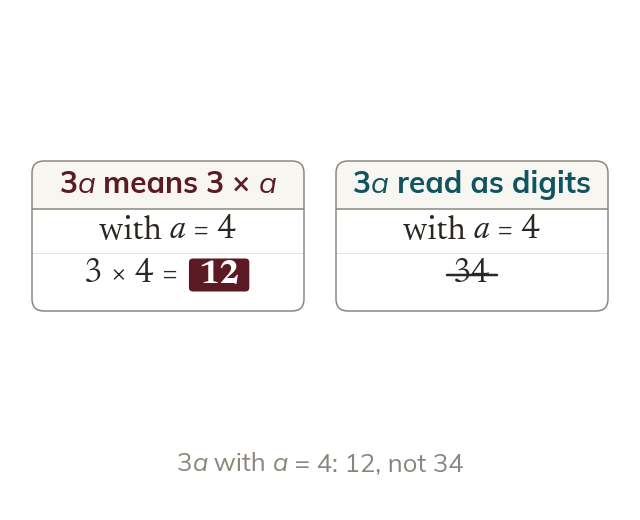

Undoing the shorthand
Substitution replaces each letter with its value, then evaluates. Never read 3a as digits side by side: it means 3 × a.
Substitution replaces each letter with a given value, then evaluates. The algebraic conventions are undone as you substitute: 3a means 3 × a, ab means a × b, a2 means a divided by 2 - none of these are ever read as digits written side by side.